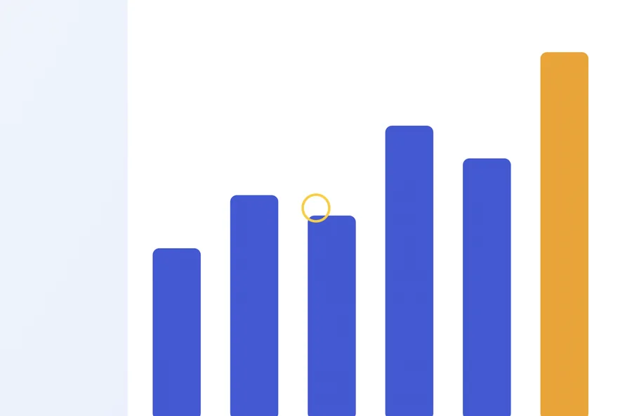
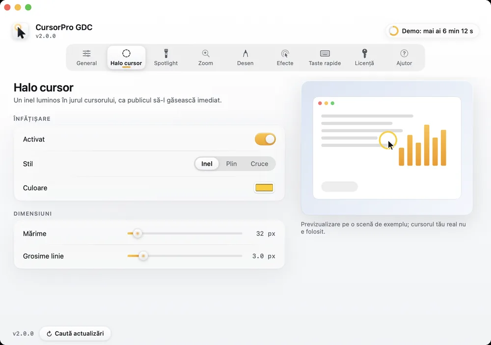
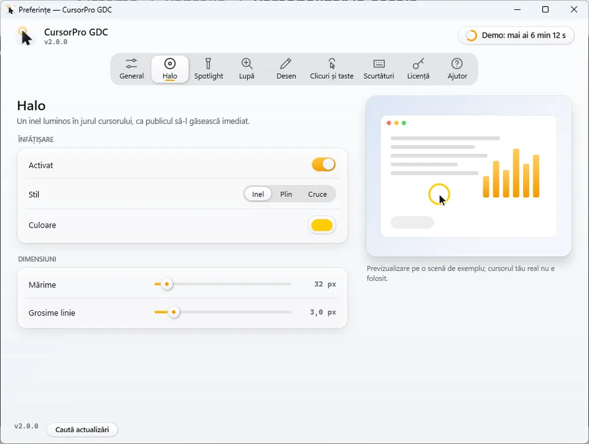
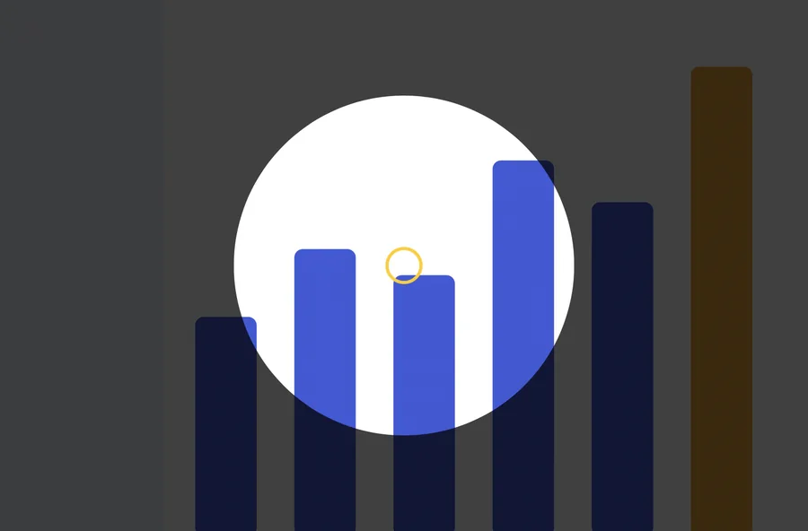
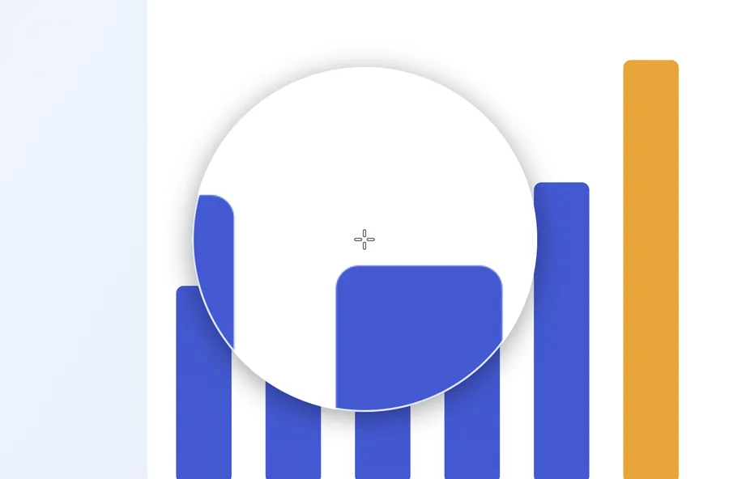

Halo
Un inel luminos în jurul cursorului, în trei stiluri, cu mărime, grosime și culoare reglabile. Se vede pe orice fundal, de la alb la negru.

CursorPro GDC pune un halo în jurul cursorului, întunecă tot ce nu contează, mărește exact unde arăți și te lasă să desenezi peste orice aplicație. Pe Mac și pe Windows.
Demo gratuit: 10 minute de utilizare activă. macOS 14 sau mai nou · Windows 10 / 11


Un inel luminos în jurul cursorului, în trei stiluri, cu mărime, grosime și culoare reglabile. Se vede pe orice fundal, de la alb la negru.

Ții o tastă și tot ecranul se întunecă, în afară de zona din jurul cursorului. Eliberezi tasta și totul revine.

O lupă rotundă cu pixeli reali, centrată exact pe vârful cursorului. Rotița schimbă mărirea din mers, iar un cadru poate fi înghețat ca să arăți calm un detaliu.

Mână liberă, săgeată, elipsă sau dreptunghi, direct peste aplicația deschisă. La o comandă, desenul dispare.
Fiecare clic lasă un inel colorat, iar combinațiile de taste apar pe ecran, ca publicul să înțeleagă ce apeși.
Nimic nu rămâne pornit din greșeală. Tastele se pot schimba oricând din aplicație.
Pe Mac: ⇧ · ⌃ · ⌥ · Pe Windows: Shift · Ctrl · Alt
Timpul curge doar cât o funcție e efectiv în folosință, nu cât aplicația stă deschisă în bara de meniu sau în tray.
Când Demo se termină, funcțiile se opresc, dar aplicația rămâne deschisă iar setările tale se păstrează. Următoarea sesiune Demo se deschide singură.
O licență se emite după o donație de susținere sau ca acces gratuit (premiu, cadou, colaborare), pentru o zi, o lună, trei luni, un an sau fără limită de timp. O ceri din aplicație, în tab-ul Licență, prin WhatsApp sau e-mail.
Susținerea proiectului este opțională și se face prin donație. Aplicația nu trimite nimic fără acțiunea ta.
Două pachete separate, câte unul pentru fiecare sistem. Fiecare are propriul Demo și propria licență.
Imagine .dmg semnată și notarizată de Apple. macOS 14 sau mai nou, procesor Apple sau Intel.
Descarcă pentru MacVersiunea 2.0.1 · CursorProGDC-2.0.1.dmg
Instalator .pkg · Link fix, mereu ultima versiune
Ghid de utilizare Mac (PDF)Program de instalare pentru Windows 10 și 11. În această perioadă este semnat cu un certificat intern GDC, deci Windows poate afișa o avertizare la prima rulare.
Descarcă pentru WindowsVersiunea 2.0.0 · CursorProGDCSetup-2.0.0.exe
Link fix, mereu ultima versiune
Ghid de utilizare Windows (PDF)Versiunile pentru Mac până la 1.5.0 au fost publicate cu sursă deschisă, sub licența MIT, și rămân disponibile în depozitul public. Versiuni anterioare (MIT)
Accesibilitatea ține evidența tastelor apăsate (halo, spotlight, desen), iar Înregistrarea ecranului este necesară doar pentru lupă, ca să poată mări zona din jurul cursorului. Aplicația nu salvează și nu trimite conținutul ecranului.
Da. Fiecare ecran are propriul strat transparent, iar lupa se oprește la marginea ecranului în loc să iasă din el.
Funcțiile se opresc în siguranță, aplicația rămâne deschisă, iar setările nu se șterg. După 48 de ore se deschide o nouă sesiune Demo, sau poți cere o licență.
Pe Mac, din aplicație: Ajutor, Dezinstalare. Pe Windows, din Setări, Aplicații. Starea perioadei Demo rămâne pe calculator, ca la orice reinstalare.
În aplicație, în tab-ul Licență, alegi o ofertă (opțional) și pregătești cererea. Aplicația îți arată mesajul, iar tu decizi dacă îl trimiți, pe WhatsApp sau e-mail. Dacă licența vine după o donație, ți-o generăm după ce confirmăm manual donația; dacă este acordată gratuit, o primești fără donație. O copiezi sau o imporți în aplicație și se activează.
La activare și reînnoire pleacă doar date tehnice minime: licența, identificatorul calculatorului, cheia publică a aplicației, platforma, ora și un număr aleator. Nu trimitem și nu înregistrăm ce e pe ecran, tastele apăsate, mișcările mouse-ului, fișiere, nume de ferestre sau parole. Detaliile sunt în termenii de utilizare, secțiunea „Datele tale”.